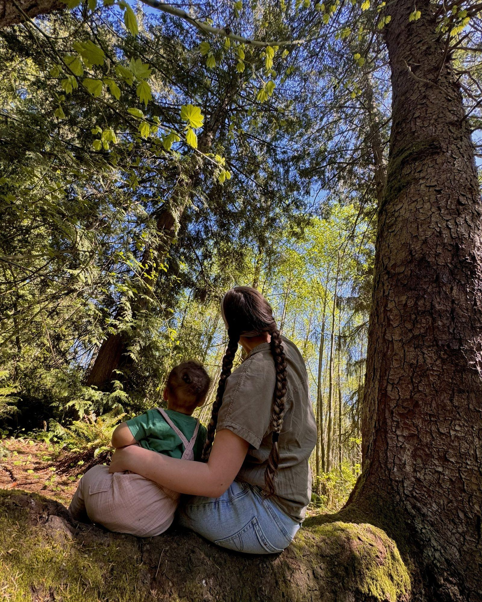
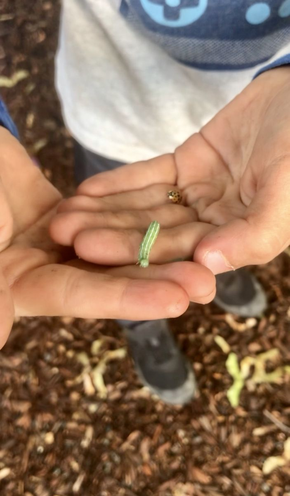
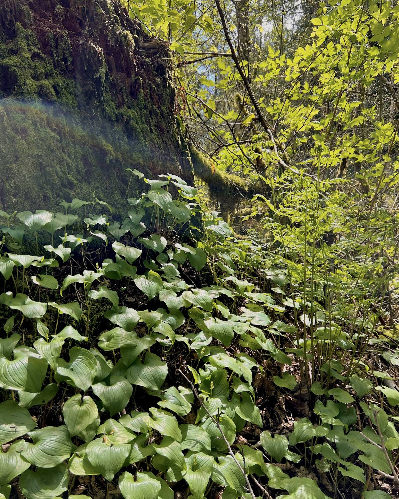

Where little hands meet big nature.
A nature-based family class for curious little ones ages 1–3 in Snohomish County, WA.
Starting June 4, 2026
Thursdays · 9:30–11:00 AM · McCollum Park, Everett, WA
Only 5 spots left for our June session
Join Us This SummerWhat Is Little Roots?
Little Roots Forest School is a weekly outdoor class where toddlers and their grown-ups explore, play, and learn together in the forest. We meet Thursday mornings at McCollum Park in Everett, rain or shine, because some of our best days happen in the mud.
Every session follows a gentle rhythm - hands-on stations, morning circle, a nature walk, snack time, and a closing song. There are no worksheets, no screens, and no pressure. Just kids being kids in the woods, with adults who understand why that matters.

What a Morning Looks Like
Times are approximate — we follow a rhythm, not a clock.
Arrival & Free Explore
Stations are already set up when you walk in. Your child can start exploring right away while everyone settles in.
Stations
Mud kitchen, sensory play, art, motor skills, nature exploration, and more. Your child moves freely between them — no one tells them where to go or when to rotate.
Morning Circle
A gathering song, a story, and an introduction to the day’s nature focus with something real to touch and hold.
Snack & Songs
We sit together while everyone enjoys their own snacks. A second shorter book and a song to get our wiggles out.
Nature Walk
We head out on the forest loop trail together at toddler pace. We collect, observe, wonder out loud, and let the children lead the way.
Closing Circle
We share one discovery, sing our closing song, and say goodbye to the forest together.

No experience needed. Just bring your boots.
Every family starts somewhere. We’ll meet you where you are.
Register for Little Roots